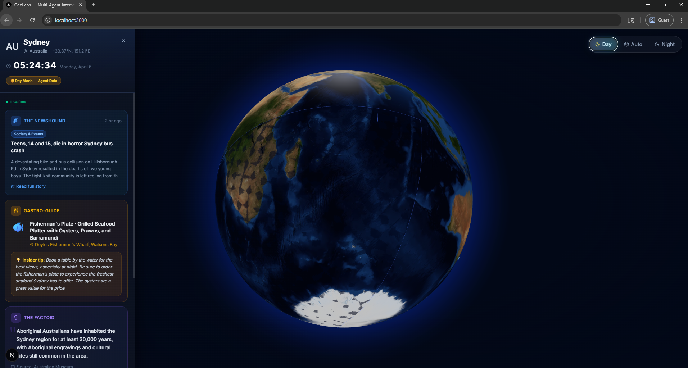

RAG Biomedical QnA Chatbot
02An end-to-end Retrieval-Augmented Generation system on a fine-tuned Mistral-7B — 90.4% BERTScore with 60% lower retrieval latency, grounding medical answers in literature instead of hallucinating.
I'm Shreyash Kakde — an AI/ML researcher and engineer pursuing my master's at USC. I build LLM pipelines, deploy RAG agents, and ship applied ML for healthcare and developer tools, with research published and validated by clinicians.
A few projects where I took a model from paper to production — retrieval pipelines, multi-agent systems, and computer-vision tools built for real users.

Click any city on a live Three.js globe to reveal two AI surfaces: an instant City Intelligence panel and a Day Planner that builds a full personalized itinerary from a natural-language goal and a budget.
V1 runs Newshound, Gastro-Guide, Factoid and Local Ledger in parallel via LangGraph. V2 chains Scout → Curator → Navigator → Narrator, streamed live over Server-Sent Events so users watch each agent finish in real time.
Every agent is non-fatal and returns partial state on failure; results cache in Redis and every call is traced with LangSmith. The Narrator emits source URLs for each itinerary item to keep outputs grounded.
An end-to-end Retrieval-Augmented Generation system on a fine-tuned Mistral-7B — 90.4% BERTScore with 60% lower retrieval latency, grounding medical answers in literature instead of hallucinating.
A lightweight multi-agent system that pairs real-time web search with live stock data — coordinated Web Search and Finance agents on a Groq LLM, wired to DuckDuckGo and Yahoo Finance.
Scalp-image analysis using self-supervised learning with <500 labeled samples. Cut diagnosis time from 30 minutes to under 5, validated by 10+ dermatologists.
A Bi-LSTM-CRF model trained on CoNLL-2003 — 83.8% F1 across 50 epochs and 10K+ labeled entities, tuned with dropout and learning-rate scheduling.
A full-featured system with a Python Tkinter GUI and MySQL backend — email notifications plus user and admin dashboards for issuing, tracking, and grievance handling.
Peer-reviewed work in Springer Proceedings of ICTCS-2023 (presented to 200+ researchers), plus a 2025 arXiv preprint on retrieval-augmented biomedical Q&A.
A RAG system pairing MiniLM semantic retrieval and FAISS vector search with a QLoRA-fine-tuned Mistral-7B-v0.3 — reaching 0.88–0.90 BERTScore F1 on a breast-cancer corpus and grounding answers in PubMed, MedQuAD and medical encyclopedias.
An AI-based dermatology diagnostic tool using self-supervised learning — improving scalp-image analysis accuracy by ~30% with minimal labeled data.
A comprehensive survey and analysis of deep-learning approaches for trichoscopy applications, presented to 200+ researchers at ICTCS-2023.
Twelve completed certificates across machine learning, data analytics, and applied AI — from Stanford, Google, IBM and more.
I'm an AI-focused master's student at USC with hands-on experience building LLM pipelines, deploying RAG agents, and solving applied ML problems in healthcare and developer tools. My research has improved diagnostic accuracy by 10–20% in medical imaging applications.
As a Research Assistant at USC and former AI Research Fellow at TIH-IoT, IIT Bombay — awarded the $7,100 Chanakya Fellowship — I've built AI diagnostic tools that cut diagnosis time from 30 minutes to under 5, with validation from 10+ dermatologists.
I'm driven by using deep learning and computer vision to solve real-world problems, especially in healthcare. My work has been published in peer-reviewed conferences and recognized by industry stakeholders.
I'm always interested in new research opportunities, ML projects, and collaborations — healthcare AI, computer vision, or an exciting idea you want to build. I'd love to hear from you.